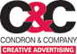

During the Summer of 2013 I interned with Condron & Company in Scranton, PA. They are a full service creative advertising agency. I worked mostly on their public relations but they also do commercials, print ads, brochures, flyers, radio copy and much more. One of their largest clients was Cabot Oil and Gas. I was able to do a lot of public relations writing for them such as press releases and media advisories. I also learned event planning through their Family Picnic, an event which they hosted for over 8,500 community residents in Harford, PA. For more information about Condron and Company please visit: http://www.condronandcompany.com |